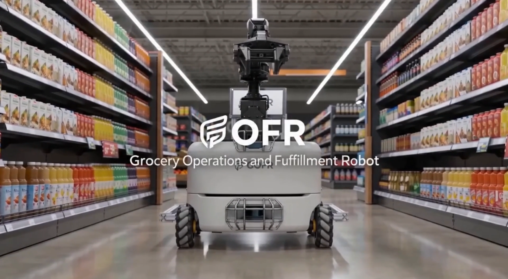

GOFR
Grocery Operational Fulfillment Robot
Senior Design Project, Sep 2025 - May 2026
GOFR is a MechE x ECE Senior Design 2025-26 student self-defined project and a SICK $10K Challenge 2025-26 finalist. The project focuses on building an autonomous robot to assist with employee stocking and customer shopping in a grocery store.
The robot combines a functional robotic arm, sensors, cameras, and AI to support navigation, perception, manipulation, and task execution in a grocery environment.
I worked in a team of 6 and contributed across software architecture, robotics autonomy, backend integration, and system-level hardware and sensing integration.
My responsibilities

GOFR project preview